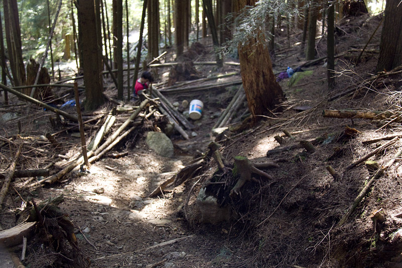

% Yield odd numbers from 1 to n
odds = iter(n:int) yields int
i:int
i = 1
while i < n do
yield i
i := i + 2
end
end odds
for i:int in odds(13) do
print int$unparse(i) || "\n"
end
def odds(n)
i = 1
while i < n
yield i
i += 2
end
end
odds(13) { |i| puts i }
Odds = Struct.new(:n) do
include Enumerable
def each(&block)
odds(n, &block)
end
end
Odds.new(13).map { it * it }
val numbers = listOf(1, 2, 3)
println(numbers.map { it * it })
fn odds(n: usize) -> impl Iterator<Item = usize> {
let mut i = 1;
std::iter::from_fn(move || {
if i < n {
let current = i;
i += 2;
Some(current)
} else {
None
}
})
}
fn main() {
let odds_13: Vec<_> = odds(13).map(|i| i * i).collect();
dbg!(odds_13);
}
Libraries too
insta (rust) → ruby-insta
Data::Faker (perl) → faker
Erlang/OTP → celluloid
Clojure / Persistent Data Structures -> hamster (ruby), immer (js)
Bundler → Cargo
Great artists steal
2. We're here to write robust and maintainable code

“Griffin Trail Day” by thesilverfactor, CC BY-NC-SA 2.0h ttps://flic.kr/p/6iLQsg
Fail fast in one place when an assumption is broken
Easier to audit
Keep downstream code free of guards
Uses
Your API's responses
Did a database schema update change your response format?
Third-party API responses
Is an undocumented field always there?
Query parameters / request bodies
Is ?sort_by=whoops a supported value?
Database rows (e.g. JSON columns)
Did we write more data than intended?
As the source of truth for specs like JSON Schema
Hyrum's law
With a sufficient number of users of an API, it does not matter what you promise in the contract: all observable behaviours of your system will be depended on by somebody.
def background_color(variant)
case variant
when :primary
"red"
when :secondary
"grey"
else
raise ArgumentError "not a valid variant: #{variant}"
end
end